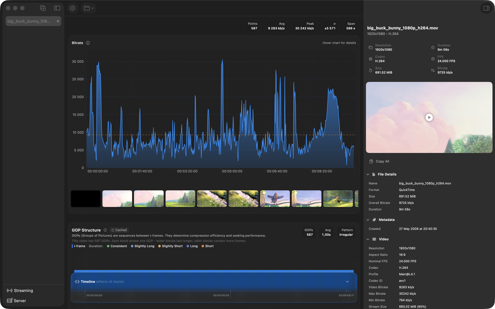
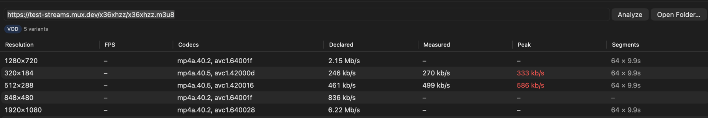
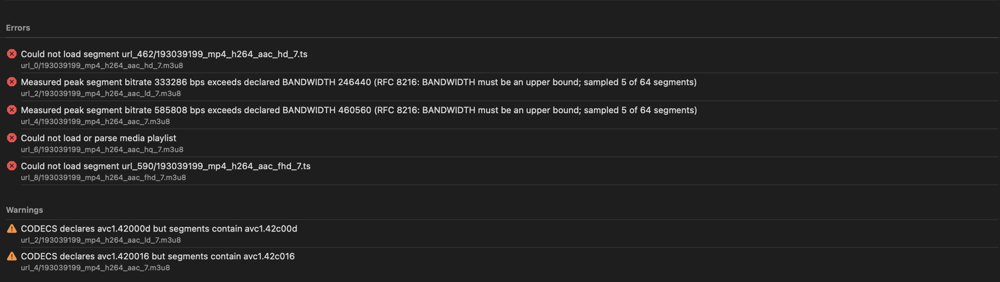
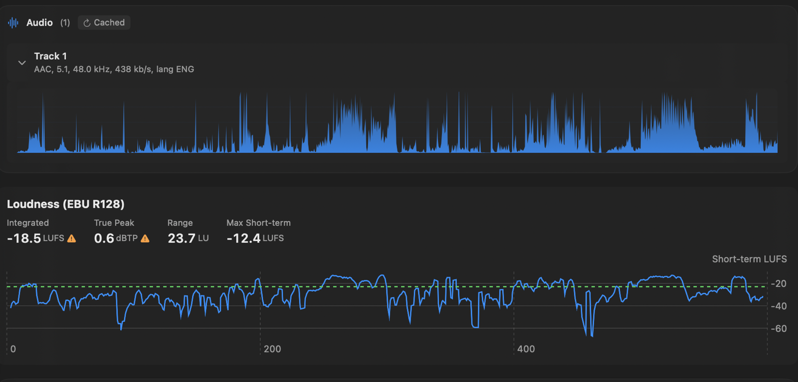
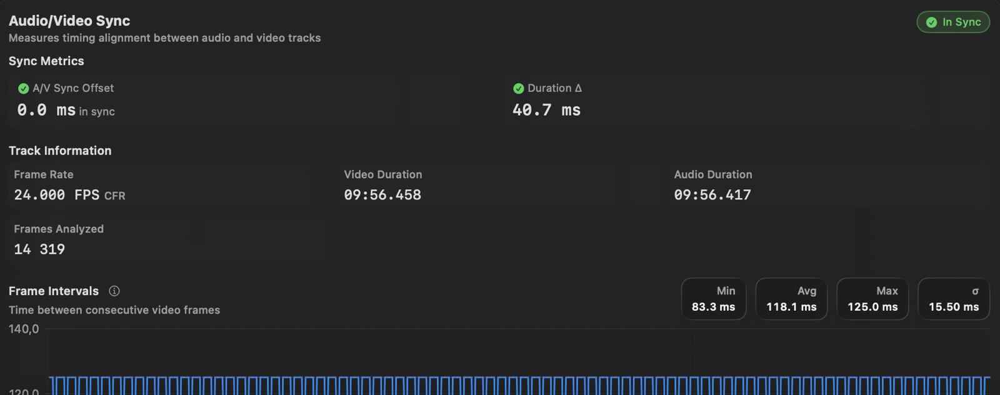

Inspect the file, not the label.
FramePeek opens a video or audio file and measures what is actually in it. Bitrate over time, GOP structure, EBU R128 loudness, A/V drift and HLS ladders. Built on AVFoundation. No FFmpeg.

- Overall
- 9 725 kb/s
- Peak
- 30 242 kb/s
- GOPs
- 597
- Pattern
- Irregular
Declared vs measured
The manifest is a claim. Check it.
Paste a playlist URL or open a local folder. FramePeek walks every variant, measures the segments and flags the ones whose real peak exceeds the BANDWIDTH they advertise. It also checks segment durations, keyframe alignment across the ladder, and whether CODECS matches what the segments actually contain.


Loudness
R128 without a render.
Integrated loudness, true peak and loudness range, gated per ITU-R BS.1770-4. The short-term curve is drawn against the -23 LUFS target, so you can see which passage is pulling the number.

A/V sync
Find the drift before QC does.
Audio and video timestamps compared track by track, with the frame interval distribution underneath. Constant frame rate, variable frame rate and duration mismatches all show up here.

Headless
Same analyses, no window.
framepeek-cli runs every analysis from the shell as
JSON, text or CSV, so it drops into a batch job or a CI step. The
same tools are exposed over MCP, which lets an agent read a file's
real properties instead of guessing at them.
$ framepeek-cli big_buck_bunny_1080p_h264.mov --info --pretty
{
"codec" : "H.264",
"codecProfile" : "Main@L4.1",
"resolution" : "1920x1080",
"frameRate" : "24.000 FPS",
"chromaSubsampling" : "4:2:0",
"colorPrimaries" : "ITU_R_709_2",
"overallBitrate" : "9725 kb/s",
"durationFormatted" : "9m 56s"
}
$ framepeek-cli *.mp4 --all --parallel $ framepeek-cli video.mp4 --bitrate --format csv $ framepeek-cli video.mp4 --loudness --pretty # expose the same analyses to an agent $ claude mcp add framepeek -- framepeek-cli mcp # tools: analyze_media, media_summary, # inspect_container, inspect_hls_ladder
Open a file and look.
Signed and notarised. The CLI ships as a separate tarball on the same release.
Download for macOS